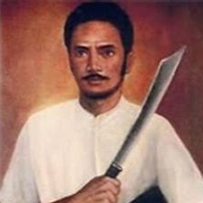
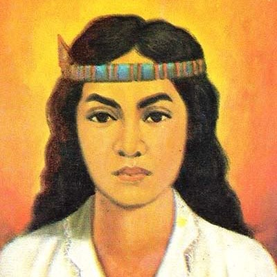
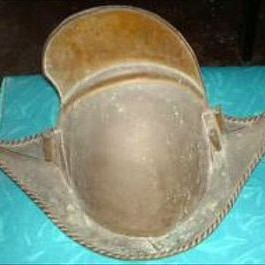

Anggota Kelompok

I Gde Dharma Sumanditha Yasa
I Ketut Margayu Sinarta
I Komang Arya Putra Widnyana
I Made Okta Dwi Samiartha
I Putu Egi Krisnanta
I Wayan Trijata Ananda Putra
Deskripsi Singkat
Perang di Maluku merupakan peristiwa penting yang menggambarkan keberanian rakyat dalam menghadapi penindasan kolonial. Konflik ini, yang ditandai oleh perlawanan gigih melawan monopoli dan eksploitasi Belanda, mengukir sejarah dengan kepahlawanan tokoh seperti Kapitan Pattimura dan Martha Christina Tiahahu. Perjuangan ini tidak hanya mempertahankan kedaulatan daerah, tetapi juga menyulut semangat nasionalisme yang menginspirasi upaya kemerdekaan seluruh Indonesia. Namun, sayangnya, perang di Maluku seringkali terlupakan dalam narasi sejarah nasional. Oleh karena itu, kami berharap melalui situs ini, kita dapat mengenang kembali perjuangan rakyat Maluku dan menghargai jasa-jasa pahlawan yang telah berjuang demi kemerdekaan bangsa.
Sejarah
Awal terjadinya konflik
Awal konflik peperangan di Maluku pada tahun 1817 dipicu oleh kebijakan kolonial Belanda yang menindas, seperti monopoli perdagangan rempah-rempah, pelayaran hongi, dan ekstirpasi atau penebangan pohon pala dan cengkeh yang melanggar aturan monopoli. Kebijakan-kebijakan ini menyebabkan penderitaan bagi rakyat Maluku, yang kemudian memicu perlawanan di bawah pimpinan Thomas Matulessy, atau yang lebih dikenal sebagai Kapitan Pattimura.Peristiwa penting
Perang Hitu

Perang ini merupakan perlawanan rakyat Hitu di Pulau Ambon terhadap monopoli perdagangan rempah-rempah yang diterapkan oleh VOC (Vereenigde Oostindische Compagnie). Dipimpin oleh Kapitan Kakiali, perlawanan ini berlangsung selama lebih dari satu dekade sebelum akhirnya berhasil dipadamkan oleh VOC.
Perang Hoamoal
Perang ini terjadi di wilayah Seram Barat, di mana masyarakat Hoamoal menolak kebijakan ekstirpasi atau penebangan pohon cengkeh yang diterapkan oleh VOC untuk mempertahankan harga rempah-rempah. Perlawanan ini menunjukkan keteguhan rakyat Maluku dalam mempertahankan hak atas sumber daya alam mereka.
Perang Pattimura
Dipimpin oleh Thomas Matulessy, yang dikenal sebagai Kapitan Pattimura, perlawanan ini merupakan reaksi terhadap penindasan dan kebijakan kolonial Belanda yang memberatkan rakyat Maluku. Salah satu peristiwa penting dalam perang ini adalah penyerangan dan perebutan Benteng Duurstede di Pulau Saparua pada 16 Mei 1817. Meskipun awalnya berhasil, perlawanan ini akhirnya dipadamkan, dan Pattimura dihukum gantung pada 16 Desember 1817.
Pertempuran Ambon
Selama Perang Dunia II, Pulau Ambon menjadi medan pertempuran antara pasukan Sekutu, terutama Belanda dan Australia, melawan Jepang. Pertempuran yang berlangsung dari 30 Januari hingga 3 Februari 1942 ini berakhir dengan kemenangan Jepang, yang kemudian menduduki Ambon dan menggunakan pulau tersebut sebagai basis militer strategis.
Dampak perang
Perang di Maluku meninggalkan dampak yang mendalam baik bagi masyarakat lokal maupun bagi perjalanan bangsa Indonesia secara keseluruhan. Bagi masyarakat Maluku, konflik ini tidak hanya mengakibatkan penderitaan berupa kerugian jiwa dan harta benda, tetapi juga menumbuhkan semangat perlawanan, keberanian, dan identitas kebanggaan atas perjuangan melawan penindasan kolonial. Pengalaman pahit tersebut menguatkan solidaritas antarwarga dan memperkokoh tekad untuk mempertahankan kedaulatan serta nilai-nilai budaya yang khas di tengah arus modernisasi. Sementara itu, di tingkat nasional, perlawanan di Maluku menjadi simbol penting dalam sejarah perjuangan kemerdekaan Indonesia, yang menginspirasi dan menyatukan beragam elemen masyarakat untuk melawan penjajahan. Semangat persatuan dan keberagaman yang tercermin dari konflik ini turut menyumbang pada terbentuknya identitas nasional yang inklusif dan tekad untuk meraih kemerdekaan.
Tokoh Penting
Kapiten Pattimura
Kapitan Pattimura adalah ikon perlawanan rakyat Maluku terhadap penjajahan Belanda. Pada tahun 1817, ia memimpin serangan berani terhadap Benteng Duurstede di Pulau Saparua, yang menjadi simbol perjuangan melawan penindasan kolonial. Meski akhirnya ditangkap dan dihukum mati, keberaniannya terus menginspirasi semangat kemerdekaan.
Martha Christina Tiahahu
Martha Christina Tiahahu adalah pahlawan perempuan yang turut berjuang bersama Pattimura. Keberaniannya dalam menghadapi penjajahan dan pengorbanan nyawanya menjadikannya simbol semangat perlawanan dan pengabdian kepada tanah air.
Kapitan Kakiali

Kapitan Kakiali memimpin perlawanan rakyat di era Perang Hitu (sekitar 1634–1646) melawan kebijakan monopoli dan penindasan VOC di Ambon. Perjuangannya menandai awal perlawanan rakyat Maluku terhadap kekuasaan asing, menanamkan benih keberanian yang terus tumbuh di masa-masa berikutnya.
Kapitan Telukabesi
Setelah wafatnya Kapitan Kakiali, Kapitan Telukabesi meneruskan semangat perlawanan rakyat Maluku. Ia berjuang mempertahankan hak-hak dan kedaulatan masyarakat Maluku meskipun menghadapi tekanan dari VOC, menunjukkan kesinambungan perjuangan dalam sejarah perlawanan lokal.
Fakta Menarik
Stategi gerilya yang efektif
Kondisi geografis Maluku yang terdiri dari banyak pulau dan hutan lebat dimanfaatkan oleh rakyat Maluku untuk menerapkan strategi gerilya. Mereka melakukan serangan mendadak terhadap pos-pos Belanda, kemudian segera menghilang ke dalam hutan atau menyebar ke pulau-pulau terdekat, membuat pasukan Belanda kesulitan dalam melakukan pengejaran dan penumpasan.
Peyergapan dan penghadangan
Rakyat Maluku sering melakukan penghadangan terhadap pasukan Belanda yang sedang bergerak melalui jalur-jalur tertentu. Taktik ini efektif dalam melemahkan moral dan kekuatan musuh, serta menghambat pergerakan mereka di wilayah Maluku.
Penggunaan ranjau dan perangkap
Dalam menghadapi pasukan Belanda yang lebih besar dan dilengkapi persenjataan modern, pejuang Maluku menggunakan ranjau dan perangkap di area-area strategis, seperti pantai dan jalur masuk ke desa-desa. Misalnya, saat mengetahui rencana kedatangan pasukan Belanda di bawah Mayor Beetjes, Pattimura dan pasukannya menyiapkan ranjau di bibir pantai Saparua, yang kemudian berhasil menewaskan Mayor Beetjes dan pasukannya pada 25 Mei 1817.
Penyatuan kekuatan lintas pulau dan agama
Perlawanan di Maluku tidak hanya melibatkan satu kelompok atau komunitas tertentu, tetapi merupakan gabungan dari berbagai elemen masyarakat lintas pulau dan agama. Penduduk dari Pulau Saparua, Nusalaut, Seram, dan lainnya, baik yang beragama Kristen maupun Islam, bersatu di bawah kepemimpinan Pattimura untuk melawan penjajahan Belanda, menunjukkan solidaritas dan persatuan yang kuat dalam menghadapi musuh bersama.